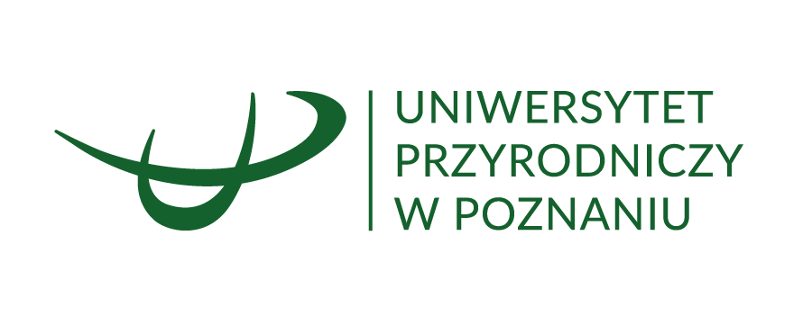
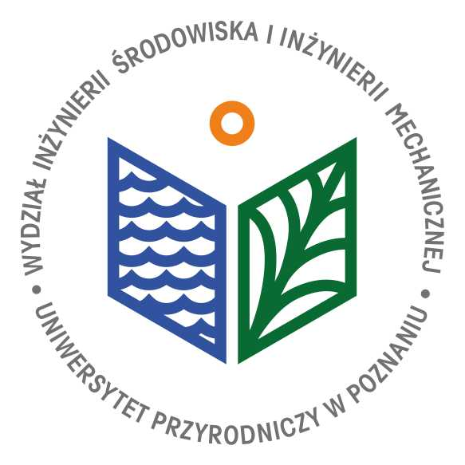

Paliwa, Chemia i Zrównoważony Rozwój
Wydział Inżynierii Środowiska i Inżynierii Mechanicznej


Spalanie Proces spalania to gwałtowna reakcja utleniania, wydzielająca ciepło (reakcja egzotermiczna).
Trójkąt składu C–H–O (Gibbsa) Dla paliw stałych skład przedstawia się na trójkącie C–H–O. Im więcej C, tym wyższa wartość opałowa, ale trudniejsze spalanie.
Ile tlenu potrzeba, żeby spalić 1 kmol węgla? \[ C + O_2 \rightarrow CO_2 \]
A dla metanu? \[ CH_4 + 2O_2 \rightarrow CO_2 + 2H_2O \]
Powietrze to nie czysty tlen! To 21% O2 i 79% N2 (objętościowo). Aby dostarczyć 1 m³ tlenu, trzeba zassać ok. 4,76 m³ powietrza.
Rzeczywista ilość powietrza: \(L = \lambda L_0\), gdzie \(L_0\) – teoretyczne (stechiometryczne) zapotrzebowanie powietrza do spalenia 1 kg (1 m³) paliwa.
To rozróżnienie jest krytyczne w technice (i na fakturach za gaz!).
Ciepło Spalania \(W_g\) (HHV) Całkowita energia uwolniona. Zakładamy, że woda ze spalin uległa skropleniu (odzyskujemy ciepło utajone).
Wartość Opałowa \(W_d\) (LHV) Energia „użyteczna” w zwykłym kotle. Woda ucieka w postaci pary kominem (tracimy ciepło parowania).
\[ W_d = W_g - r\,(9h + w) \]
\(r \approx 2442\) kJ/kg – ciepło parowania wody (25 °C); \(h\), \(w\) – udziały masowe wodoru i wilgoci w paliwie [kg/kg]; \(9h\) – woda powstała ze spalenia wodoru.
Kotły kondensacyjne odzyskują część ciepła skraplania pary ze spalin: sprawność liczona względem \(W_d\) (LHV) może przekroczyć 100%, ale względem \(W_g\) (HHV) jest zawsze < 100%.
Paradoks energii Z I Zasady wynika, że energia jest niezniszczalna. Dlaczego więc „oszczędzamy energię”? Ponieważ tracimy jej jakość!
Egzergia (\(B\)) Maksymalna praca użyteczna, jaką można uzyskać przy odwracalnym doprowadzeniu układu do równowagi z otoczeniem, gdy otoczenie jest jedynym źródłem ciepła.
Niszczenie egzergii Każdy proces nieodwracalny (tarcie, mieszanie, spalanie) generuje entropię i niszczy egzergię.
\[ \Delta B_{\text{strat}} = T_0 \sum \Delta S \]
\(T_0\) – temperatura otoczenia [K]; \(\sum \Delta S\) – suma przyrostów entropii wszystkich ciał uczestniczących w procesie (entropia generowana).
Największa strata energii to skraplacz, ale największa destrukcja egzergii zachodzi w kotle; kogeneracja (CHP) zwiększa wykorzystanie energii paliwa.
Idea układów skojarzonych Jednoczesne wytwarzanie energii elektrycznej i ciepła użytkowego z tego samego paliwa.
Sprawność: ~40%
Sprawność całkowita: ~80%!
Bezpośrednia zamiana energii chemicznej w elektryczną Ogniwa paliwowe to urządzenia elektrochemiczne, które przekształcają energię chemiczną paliwa (np. wodoru) bezpośrednio w prąd, omijając spalanie i cykl Carnota.
Zalety
Zastosowania
Proszę przygotować się z:
„Energia jest jedyną walutą we Wszechświecie, za którą musisz płacić podatki (entropię).”
Dziękuję za wspólny semestr!
Termodynamika Techniczna (W15)